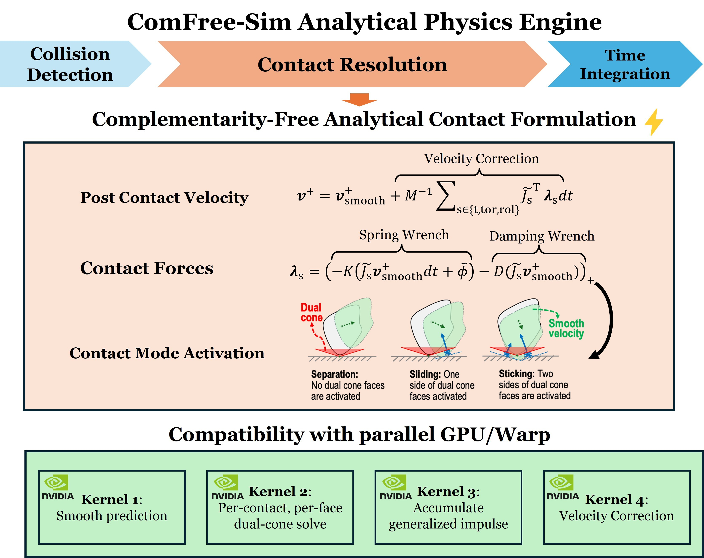
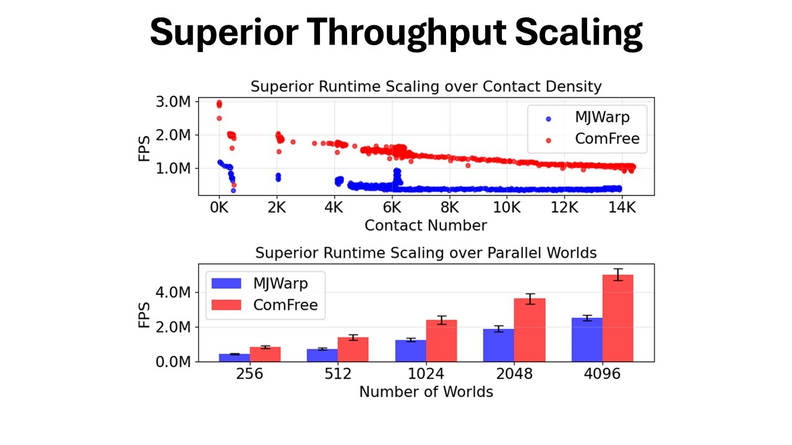

Dual arm manipulation tasks require synchronized control of two robotic arms to perform complex object manipulation and assembly operations. ComFree-Sim enables real-time simulation and control of dual arm systems with high contact complexity.
We also demonstrate the ContactSDF model on a Allegro hand for on-palm object reorientation. The system includes a 6-DoF object laying on the palm of the Allegro hand and the fingers are actuated by a low-level joint PD controller. The goal is to reorient the object (solid) from an initial pose to a desired target pose (transparent). Click the tabs to check the manipulation results for different objects.
We thank the MuJoCo Warp (MJWarp) team at Google DeepMind and NVIDIA for making the code publicly available. We also thank Vamsi Sai Abhijit Tadepalli of the IRIS Lab for maintaining the vision-tracking module used in our real-world in-hand manipulation experiments.